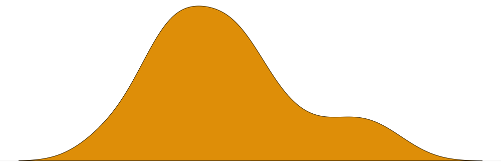
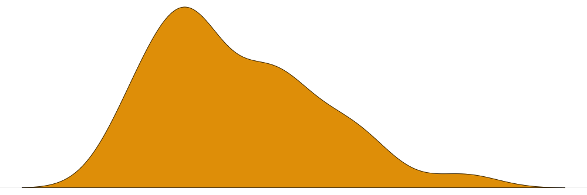
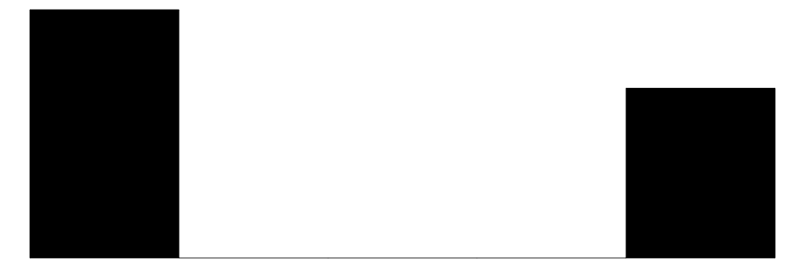

Themes and Styles
To customize the appearance of tables, modelsummary supports five of the most popular table-making packages:
tinytable: https://vincentarelbundock.github.io/tinytable/gt: https://gt.rstudio.comkableExtra: http://haozhu233.github.io/kableExtrahuxtable: https://hughjonesd.github.io/huxtable/flextable: https://davidgohel.github.io/flextable/DT: https://rstudio.github.io/DT
Users are encouraged to visit these websites to determine which package suits their needs best.
To create customized tables, we proceed as follows:
- Call a
modelsummaryfunction likedatasummary(). - Use the
outputargument to specify the package to be used for customization, such asoutput="tinytable"oroutput="gt". - Apply a function from the package in question to the object created by
modelsummary.
To illustrate, we download data from the Rdatasets repository and we estimate 5 models:
library(modelsummary)
url <- "https://vincentarelbundock.github.io/Rdatasets/csv/HistData/Guerry.csv"
dat <- read.csv(url, na.strings = "")
models <- list(
I = lm(Donations ~ Literacy, data = dat),
II = lm(Crime_pers ~ Literacy, data = dat),
III = lm(Crime_prop ~ Literacy + Clergy, data = dat),
IV = glm(Crime_pers ~ Literacy + Clergy, family = poisson, data = dat),
V = glm(Donations ~ Literacy + Clergy, family = poisson, data = dat)
)In the rest of this vignette, we will customize tables using tools tinytable and gt. The same process can be used to customize kableExtra, flextable, huxtable, and DT tables.
tinytable
The tinytable package offers many functions to customize the appearance of tables. Below, we give a couple illustrations, but interested readers should refer to the detailed tutorial on the tinytable package website: https://vincentarelbundock.github.io/tinytable/
In this example, we use the group_tt() function to add spanning column headers, and the style_tt() function to color a few cells of the table:
library(tinytable)
modelsummary(models) |>
group_tt(j = list(Linear = 2:4, Poisson = 5:6)) |>
style_tt(i = 3:4, j = 2, background = "teal", color = "white", bold = TRUE)| Linear | Poisson | ||||
|---|---|---|---|---|---|
| I | II | III | IV | V | |
| (Intercept) | 8759.068 | 20357.309 | 11243.544 | 9.708 | 8.986 |
| (1559.363) | (2020.980) | (1011.240) | (0.003) | (0.004) | |
| Literacy | -42.886 | -15.358 | -68.507 | 0.000 | -0.006 |
| (36.362) | (47.127) | (18.029) | (0.000) | (0.000) | |
| Clergy | -16.376 | 0.004 | 0.002 | ||
| (12.522) | (0.000) | (0.000) | |||
| Num.Obs. | 86 | 86 | 86 | 86 | 86 |
| R2 | 0.016 | 0.001 | 0.152 | ||
| R2 Adj. | 0.005 | -0.011 | 0.132 | ||
| AIC | 1739.1 | 1783.7 | 1616.9 | 242266.3 | 302865.8 |
| BIC | 1746.5 | 1791.1 | 1626.7 | 242273.6 | 302873.2 |
| Log.Lik. | -866.574 | -888.874 | -804.441 | -121130.130 | -151429.921 |
| F | 1.391 | 0.106 | 7.441 | 7905.811 | 4170.610 |
| RMSE | 5753.14 | 7456.23 | 2793.43 | 7233.22 | 5727.27 |
Now, we create a descriptive statistics table with datasummary(). That table includes an emptyr row, which we fill with density plots using the plot_tt() function from tinytable:
Density <- function(x) ""
datasummary(mpg + hp ~ Mean + SD + Density, data = mtcars) |>
plot_tt(
j = 4,
fun = "density",
data = list(mtcars$mpg, mtcars$hp),
color = "#E69F00")| Mean | SD | Density | |
|---|---|---|---|
| mpg | 20.09 | 6.03 |  |
| hp | 146.69 | 68.56 |  |
HTML tables can be further customized in tinytable by specifying CSS rules. Again, detailed tutorials are available on the tinytable website. This example adds an image in the background of a table:
css <- "
.mytable {
background-size: cover;
background-position: center;
background-image: url('https://user-images.githubusercontent.com/987057/82732352-b9aabf00-9cda-11ea-92a6-26750cf097d0.png');
--bs-table-bg: transparent;
}
"
modelsummary(models) |>
style_tt(
bootstrap_class = "table table-borderless mytable",
bootstrap_css_rule = css)Warning: The `bootstrap_class` argument is deprecated. Use `theme_html(x, class = ...)` instead.Warning: The `bootstrap_css_rule` argument is deprecated. Use `theme_html(x, css_rule = ...)` instead.| I | II | III | IV | V | |
|---|---|---|---|---|---|
| (Intercept) | 8759.068 | 20357.309 | 11243.544 | 9.708 | 8.986 |
| (1559.363) | (2020.980) | (1011.240) | (0.003) | (0.004) | |
| Literacy | -42.886 | -15.358 | -68.507 | 0.000 | -0.006 |
| (36.362) | (47.127) | (18.029) | (0.000) | (0.000) | |
| Clergy | -16.376 | 0.004 | 0.002 | ||
| (12.522) | (0.000) | (0.000) | |||
| Num.Obs. | 86 | 86 | 86 | 86 | 86 |
| R2 | 0.016 | 0.001 | 0.152 | ||
| R2 Adj. | 0.005 | -0.011 | 0.132 | ||
| AIC | 1739.1 | 1783.7 | 1616.9 | 242266.3 | 302865.8 |
| BIC | 1746.5 | 1791.1 | 1626.7 | 242273.6 | 302873.2 |
| Log.Lik. | -866.574 | -888.874 | -804.441 | -121130.130 | -151429.921 |
| F | 1.391 | 0.106 | 7.441 | 7905.811 | 4170.610 |
| RMSE | 5753.14 | 7456.23 | 2793.43 | 7233.22 | 5727.27 |
Dot alignement in LaTeX
Sometimes, dot-alignment fails in LaTeX because some cells include only text. In other cases, users wish to prevent dot-alignment for specific cells. This can be achieved by using the tinytable::style_tt() function to insert tabularray instructions in to the raw LaTeX table. Here, we create a regression table for a fixest model. The output includes a text-only row which identifies fixed effects. We call style_tt() to “guard†and center the text in the relevant cells.
library(fixest)
library(tinytable)
library(modelsummary)
m <- feols(mpg ~ wt + factor(cyl) | carb, data = mtcars)
modelsummary(m, align = "ld") |>
theme_latex(tabularray_inner = "cell{16-17}{2}={guard,halign=c}")| (1) | |
|---|---|
| wt | -3.110 |
| (1.068) | |
| factor(cyl)6 | -3.484 |
| (0.520) | |
| factor(cyl)8 | -5.528 |
| (1.797) | |
| Num.Obs. | 32 |
| R2 | 0.847 |
| R2 Adj. | 0.794 |
| R2 Within | 0.725 |
| R2 Within Adj. | 0.689 |
| AIC | 162.7 |
| BIC | 175.8 |
| RMSE | 2.32 |
| Std.Errors | by: carb |
| FE: carb | X |
Removing elements (e.g. horizontal rules)
When modelsummary() creates a tinytable, it fixes a few styling elements immediately, which can cause minor issues when customizing the table further. For example, modelsummary() draws a separator line to distinguish the coefficients and goodness-of-fit statistics, but this line is drawn at a hard-coded position in the table. If users call tinytable functions to add rows after the fact, the separator line may no longer appear in the correct place.
One way to work around this issue is to manually “flush†all the stylings that modelsummary() inserted, to start fresh.
To start, notice that added group labels breaks the location of the separator line:
library(modelsummary)
library(tinytable)
mod <- lm(mpg ~ hp + factor(cyl), data = mtcars)
tab <- modelsummary(mod)
tab |> group_tt(i = list("Coefs" = 1, "Cylinders" = 5))| (1) | |
|---|---|
| Coefs | Coefs |
| (Intercept) | 28.650 |
| (1.588) | |
| hp | -0.024 |
| (0.015) | |
| Cylinders | Cylinders |
| factor(cyl)6 | -5.968 |
| (1.639) | |
| factor(cyl)8 | -8.521 |
| (2.326) | |
| Num.Obs. | 32 |
| R2 | 0.754 |
| R2 Adj. | 0.727 |
| AIC | 169.9 |
| BIC | 177.2 |
| Log.Lik. | -79.948 |
| F | 28.585 |
| RMSE | 2.94 |
To fix this, we create the table, remove styles with the strip_tt() function, and then add new ones:
modelsummary(mod) |>
strip_tt(line = TRUE) |>
group_tt(i = list("Coefs" = 1, "Cylinders" = 5)) |>
style_tt(i = 10, line = "b", line_color = "lightgray")| (1) | |
|---|---|
| Coefs | Coefs |
| (Intercept) | 28.650 |
| (1.588) | |
| hp | -0.024 |
| (0.015) | |
| Cylinders | Cylinders |
| factor(cyl)6 | -5.968 |
| (1.639) | |
| factor(cyl)8 | -8.521 |
| (2.326) | |
| Num.Obs. | 32 |
| R2 | 0.754 |
| R2 Adj. | 0.727 |
| AIC | 169.9 |
| BIC | 177.2 |
| Log.Lik. | -79.948 |
| F | 28.585 |
| RMSE | 2.94 |
gt
To illustrate how to customize tables using the gt package we will use the following functions from the gt package:
-
tab_spannercreates labels to group columns. -
tab_footnoteadds a footnote and a matching marking in a specific cell. -
tab_stylecan modify the text and color of rows, columns, or cells.
To produce a “cleaner†look, we will also use modelsummary’s stars, coef_map, gof_omit, and title arguments.
Note that in order to access gt functions, we must first load the library.
library(gt)
## build table with `modelsummary`
cm <- c( '(Intercept)' = 'Constant', 'Literacy' = 'Literacy (%)', 'Clergy' = 'Priests/capita')
cap <- 'A modelsummary table customized with gt'
tab <- modelsummary(models,
output = "gt",
coef_map = cm, stars = TRUE,
title = cap, gof_omit = 'IC|Log|Adj')
## customize table with `gt`
tab %>%
# column labels
tab_spanner(label = 'Donations', columns = 2:3) %>%
tab_spanner(label = 'Crimes (persons)', columns = 4:5) %>%
tab_spanner(label = 'Crimes (property)', columns = 6) %>%
# footnote
tab_footnote(footnote = md("A very **important** variable."),
locations = cells_body(rows = 3, columns = 1)) %>%
# text and background color
tab_style(style = cell_text(color = 'red'),
locations = cells_body(rows = 3)) %>%
tab_style(style = cell_fill(color = 'lightblue'),
locations = cells_body(rows = 5))|
Donations
|
Crimes (persons)
|
Crimes (property)
|
|||
|---|---|---|---|---|---|
| I | II | III | IV | V | |
| Constant | 8759.068*** | 20357.309*** | 11243.544*** | 9.708*** | 8.986*** |
| (1559.363) | (2020.980) | (1011.240) | (0.003) | (0.004) | |
| Literacy (%)1 | -42.886 | -15.358 | -68.507*** | 0.000*** | -0.006*** |
| (36.362) | (47.127) | (18.029) | (0.000) | (0.000) | |
| Priests/capita | -16.376 | 0.004*** | 0.002*** | ||
| (12.522) | (0.000) | (0.000) | |||
| Num.Obs. | 86 | 86 | 86 | 86 | 86 |
| R2 | 0.016 | 0.001 | 0.152 | ||
| F | 1.391 | 0.106 | 7.441 | 7905.811 | 4170.610 |
| RMSE | 5753.14 | 7456.23 | 2793.43 | 7233.22 | 5727.27 |
| + p < 0.1, * p < 0.05, ** p < 0.01, *** p < 0.001 | |||||
| 1 A very important variable. | |||||
The gt website offers many more examples. The possibilities are endless. For instance, gt allows you to embed images in your tables using the text_transform and local_image functions:
f <- function(x) web_image(url = "https://user-images.githubusercontent.com/987057/82732352-b9aabf00-9cda-11ea-92a6-26750cf097d0.png", height = 80)
tab %>%
text_transform(locations = cells_body(columns = 2:6, rows = 1), fn = f)| I | II | III | IV | V | |
|---|---|---|---|---|---|
| Constant |  |
|
|
|
|
| (1559.363) | (2020.980) | (1011.240) | (0.003) | (0.004) | |
| Literacy (%) | -42.886 | -15.358 | -68.507*** | 0.000*** | -0.006*** |
| (36.362) | (47.127) | (18.029) | (0.000) | (0.000) | |
| Priests/capita | -16.376 | 0.004*** | 0.002*** | ||
| (12.522) | (0.000) | (0.000) | |||
| Num.Obs. | 86 | 86 | 86 | 86 | 86 |
| R2 | 0.016 | 0.001 | 0.152 | ||
| F | 1.391 | 0.106 | 7.441 | 7905.811 | 4170.610 |
| RMSE | 5753.14 | 7456.23 | 2793.43 | 7233.22 | 5727.27 |
| + p < 0.1, * p < 0.05, ** p < 0.01, *** p < 0.001 | |||||
Themes
If you want to apply the same post-processing functions to your tables, you can use modelsummary’s theming functionality. To do so, we first create a function to post-process a table. This function must accept a table as its first argument, and include the ellipsis (...). Optionally, the theming function can also accept an hrule argument which is a vector of row positions where we insert horizontal rule, and an output_format which allows output format-specific customization. For inspiration, you may want to consult the default modelsummary themes in the themes.R file of the Github repository.
Once the theming function is created, we assign it to a global option called modelsummary_theme_kableExtra, modelsummary_theme_gt, modelsummary_theme_flextable, or modelsummary_theme_huxtable. For example, if you want to add row striping to all your gt tables:
library(gt)
## The ... ellipsis is required!
custom_theme <- function(x, ...) {
x %>% gt::opt_row_striping(row_striping = TRUE)
}
options("modelsummary_theme_gt" = custom_theme)
mod <- lm(mpg ~ hp + drat, mtcars)
modelsummary(mod, output = "gt")| (1) | |
|---|---|
| (Intercept) | 10.790 |
| (5.078) | |
| hp | -0.052 |
| (0.009) | |
| drat | 4.698 |
| (1.192) | |
| Num.Obs. | 32 |
| R2 | 0.741 |
| R2 Adj. | 0.723 |
| AIC | 169.5 |
| BIC | 175.4 |
| Log.Lik. | -80.752 |
| F | 41.522 |
| RMSE | 3.02 |
url <- 'https://vincentarelbundock.github.io/Rdatasets/csv/palmerpenguins/penguins.csv'
penguins <- read.csv(url, na.strings = "")
datasummary_crosstab(island ~ sex * species, output = "gt", data = penguins)| island |
female
|
male
|
All | |||||
|---|---|---|---|---|---|---|---|---|
| Adelie | Chinstrap | Gentoo | Adelie | Chinstrap | Gentoo | |||
| Biscoe | N | 22 | 0 | 58 | 22 | 0 | 61 | 168 |
| % row | 13.1 | 0.0 | 34.5 | 13.1 | 0.0 | 36.3 | 100.0 | |
| Dream | N | 27 | 34 | 0 | 28 | 34 | 0 | 124 |
| % row | 21.8 | 27.4 | 0.0 | 22.6 | 27.4 | 0.0 | 100.0 | |
| Torgersen | N | 24 | 0 | 0 | 23 | 0 | 0 | 52 |
| % row | 46.2 | 0.0 | 0.0 | 44.2 | 0.0 | 0.0 | 100.0 | |
| All | N | 73 | 34 | 58 | 73 | 34 | 61 | 344 |
| % row | 21.2 | 9.9 | 16.9 | 21.2 | 9.9 | 17.7 | 100.0 | |
Restore default theme:
options("modelsummary_theme_gt" = NULL)Themes: Data Frame
A particularly flexible strategy is to apply a theme to the dataframe output format. To illustrate, recall that setting output="dataframe" produces a data frame with a lot of extraneous meta information. To produce a nice table, we have to process that output a bit:
mod <- lm(mpg ~ hp + drat, mtcars)
modelsummary(mod, output = "dataframe") part term statistic (1)
1 estimates (Intercept) estimate 10.790
2 estimates (Intercept) std.error (5.078)
3 estimates hp estimate -0.052
4 estimates hp std.error (0.009)
5 estimates drat estimate 4.698
6 estimates drat std.error (1.192)
7 gof Num.Obs. 32
8 gof R2 0.741
9 gof R2 Adj. 0.723
10 gof AIC 169.5
11 gof BIC 175.4
12 gof Log.Lik. -80.752
13 gof F 41.522
14 gof RMSE 3.02modelsummary supports the DT table-making package out of the box. But for the sake of illustration, imagine we want to create a table using the DT package with specific customization and options, in a repeatable fashion. To do this, we can create a theming function:
library(DT)
theme_df <- function(tab) {
out <- tab
out$term[out$statistic == "modelsummary_tmp2"] <- " "
out$part <- out$statistic <- NULL
colnames(out)[1] <- " "
datatable(out, rownames = FALSE,
options = list(pageLength = 30))
}
options("modelsummary_theme_dataframe" = theme_df)
modelsummary(mod, output = "dataframe")Restore default theme:
options("modelsummary_theme_dataframe" = NULL)Variable labels
Some packages like haven can assign attributes to the columns of a dataset for use as labels. Most of the functions in modelsummary can display these labels automatically. For example:
library(haven)
dat <- mtcars
dat$am <- haven::labelled(dat$am, label = "Transmission")
dat$mpg <- haven::labelled(dat$mpg, label = "Miles per Gallon")
mod <- lm(hp ~ mpg + am, dat = dat)
modelsummary(mod, coef_rename = TRUE)| (1) | |
|---|---|
| (Intercept) | 352.312 |
| (27.226) | |
| Miles per Gallon | -11.200 |
| (1.494) | |
| Transmission | 47.725 |
| (18.048) | |
| Num.Obs. | 32 |
| R2 | 0.680 |
| R2 Adj. | 0.658 |
| AIC | 331.9 |
| BIC | 337.8 |
| Log.Lik. | -161.971 |
| F | 30.766 |
| RMSE | 38.19 |
datasummary_skim(dat[, c("mpg", "am", "drat")])| Unique | Missing Pct. | Mean | SD | Min | Median | Max | Histogram | |
|---|---|---|---|---|---|---|---|---|
| Miles per Gallon | 25 | 0 | 20.1 | 6.0 | 10.4 | 19.2 | 33.9 | |
| Transmission | 2 | 0 | 0.4 | 0.5 | 0.0 | 0.0 | 1.0 |  |
| drat | 22 | 0 | 3.6 | 0.5 | 2.8 | 3.7 | 4.9 |
Warning: Saving to file
When users supply a file name to the output argument, the table is written immediately to file. This means that users cannot post-process and customize the resulting table using functions from gt, kableExtra, huxtable, or flextable. When users specify a filename in the output argument, the modelsummary() call should be the final one in the chain.
This is OK:
modelsummary(models, output = 'table.html')This is not OK:
library(tinytable)
modelsummary(models, output = 'table.html') |>
group_tt(j = list(Literacy = 2:3))To save a customized table, you should apply all the customizations you need before saving it using dedicated package-specific functions:
For example, to add color column spanners with the gt package:
LaTeX significance stars
When rendering a notebook to PDF or saving a table to LaTeX, modelsummary will automatically wrap the stars identifiers in the footnote in a siunitx \num{} tag. This ensures proper rendering. Unfortunately, when saving the table to file using save_tt(), modelsummary does not know ex ante what the ultimate file format will be, so it cannot automatically wrap the stars.
One alternative is to turn off the stars footnote using a global option, and then supply the stars indicators manually in the notes argument.
library(tinytable)
library(modelsummary)
x <- rnorm(1e6)
y <- x + rnorm(1e6)
m <- lm(y ~ x)
sn <- "+ \\num{< 0.1}, * \\num{p< 0.05}, ** \\num{p<0.01}, *** \\num{p<0.001}"
options(modelsummary_stars_note = FALSE)
modelsummary(m, notes = sn, stars = TRUE) |> save_tt("latex")Math
To render math in modelsummary in HTML files, you need to ensure that MathJax is enabled. See the tinytable documentation for more details.
Here is a minimal example:
options(tinytable_html_mathjax = TRUE)
mod <- lm(mpg ~ factor(cyl) - 1, data = mtcars)
cr <- c("factor(cyl)4" = "$\\beta_1$", "factor(cyl)6" = "$\\beta_2$", "factor(cyl)8" = "$\\beta_3$")
modelsummary(mod, coef_map = cr)| (1) | |
|---|---|
| $\beta_1$ | 26.664 |
| (0.972) | |
| $\beta_2$ | 19.743 |
| (1.218) | |
| $\beta_3$ | 15.100 |
| (0.861) | |
| Num.Obs. | 32 |
| R2 | 0.979 |
| R2 Adj. | 0.976 |
| AIC | 170.6 |
| BIC | 176.4 |
| Log.Lik. | -81.282 |
| RMSE | 3.07 |